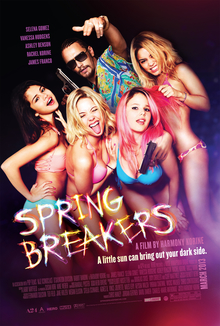

Harmony Korine
2012
94 minutes
TITLE: Spring Breakers TEXT PLACEHOLDER 114
You're going to like this film more than you thought you would. But first you have to survive watching it.
Your friend has invited you over for a viewing. They have a full bottle of Fernet. They give you a glass of this and then proceed to drink half the bottle before putting it on, and then the other half over the course of the film, mostly straight from the bottle.
Your friend has plenty of comments and background on the film which is fascinating to you but varies in coherence as they keep pausing the film and holding forth on it and then getting distracted and talking about other topics.
After awhile your friend lets the film run on its own but falls asleep. They keep waking up for the sex scenes and then loudly declaring them "BO-RING" or "HO-HUM", to your enormous confusion. You aren't particularly excited by the Spring Break atmosphere or the particular women who are portrayed on the screen having gross, greasy sex with random strangers or eventually James Franco.
Your friend wakes up for a sex scene with James Franco where one of the women is forcing him to fellate a gun barrel. To your alarm, your friend declares this to be "HO HUM BO-RING" as well and then turns over on the couch to go back to sleep. This makes you question a lot of your friend's judgment on such sensual matters. James Franco sucking on the barrel of a pistol isn't your cup of tea, but it's not something you'd quite put in the "BO-RING" category.
Eventually your friend is snoring quietly on the couch and you're trying to concentrate as the film grows increasingly violent and colorful. By the time it's into full Speed Racer glowing condom foam party territory, your friend miraculously awakens and starts showing intense interest. They pause it several times to talk about the colors and which other films it reminds them of. At the end of the film they ask you what you think and you stammer a bit and declare that it reminds you of Speed Racer by the Wachowski siblings. Your friend declares "Yeah, I saw this one in the theater first...I still don't know what to think of it." And that's that.
Later on you watch Newsies, or at least the first twenty minutes. Your friend sings along and then falls asleep. You put on a Serge Gainsbourg biopic, determine that there isn't any more Fernet left, and then grab a beer out of your friend's fridge.
Time to choose something different: